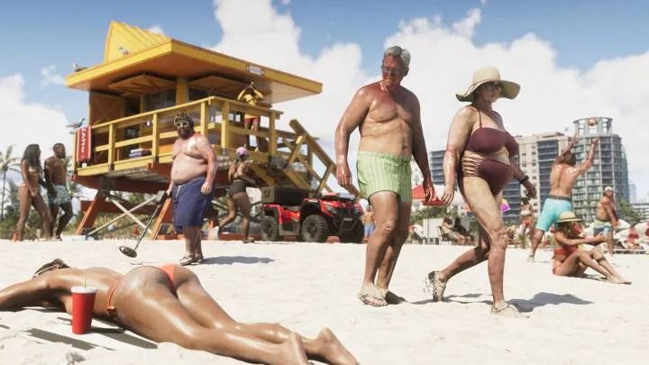
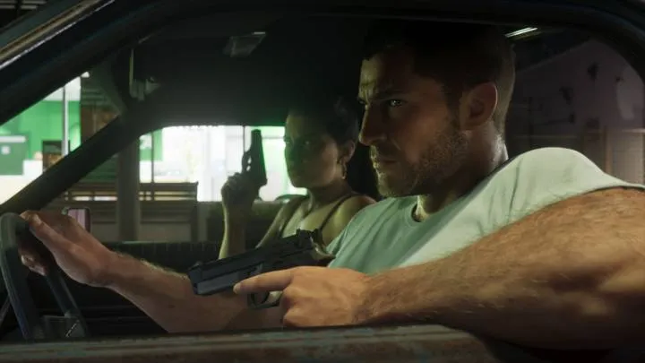

Опубликовано:
Третья глава — самая длинная: 26 миссий. Пара перебирается в Вайс-Сити, знакомится с Дре’Куаном, Буби Айком и Раулем Баутистой и готовит первое крупное ограбление — банк картеля. Здесь начинаются серьёзные деньги: скупщики Тайрон и Ясмани, заказы Рэнди на дорогие машины. После миссии Credit Check открываются ограбления банков (22) и микрозаймов (7) по всей карте.
Списки немного расходятся: у Push Square в главе есть Kitty Litter Labs и нет Caught Slipping, а машина в 16-й миссии пишется Zorrusso.
Все миссии главы 3
| № | Миссия | За кого | О чём |
|---|---|---|---|
| 1 | Welcome to Vice City ✓ | Джейсон и Лусия | Джейсон и Лусия знакомятся с Дре’Куаном. |
| 2 | Dealer’s Choice ✓ | Джейсон | Джейсон проводит сделку. |
| 3 | Meet the Heders | Джейсон и Лусия | Двойное свидание. |
| 4 | Dubious Provenance ✓ | Джейсон и Лусия | Визит в антикварный магазин. |
| 5 | Mami Knows Best ✓ | Лусия | Лусия встречается с родственницей. |
| 6 | South Leonida Real Estate | Лусия | Лусия сталкивается с M7. |
| 7 | Tyrone | Джейсон | Джейсон просит работу у Тайрона. |
| 8 | Here, Kitty Kitty | Джейсон | Джейсон ищет Чарльза. |
| 9 | Car Services | Лусия | Лусия угоняет ещё одну машину. |
| 10 | Top Billing | Джейсон и Лусия | Концерт с Дре’Куаном. |
| 11 | Boobie Time | Джейсон | Джейсон возит Буби. |
| 12 | First Impressions | Джейсон и Лусия | Знакомство с Раулем. |
| 13 | Caught Slipping | Джейсон и Лусия | Джейсон и Лусия срывают кражу со взломом. |
| 14 | Crosstown Traffic | Лусия | Лусия следит за членом банды. |
| 15 | Credit Check | Джейсон и Лусия | Рауль приглашает пару на свою базу. |
| 16 | Steal the Zorruso for Randy | Джейсон и Лусия | Угон дорогой машины. |
| 17 | Sinfrontera National Bank | Джейсон и Лусия | Подготовка к ограблению. |
| 18 | Security Expert | Джейсон и Лусия | Знакомство с Николь. |
| 19 | Ride or Die | Джейсон | Джейсон помогает Дре’Куану. |
| 20 | Company Property | Джейсон и Лусия | Партия оружия. |
| 21 | The Missing Link | Лусия | Лусия на петушиных боях. |
| 22 | Safe Word | Лусия | Лусия осваивает новый навык. |
| 23 | Cooties | Лусия | Лусия снимает клип. |
| 24 | Bricked Up | Джейсон и Лусия | Работа на Буби. |
| 25 | Hidden Charges | Джейсон и Лусия | Последняя подготовка. |
| 26 | The Cartel Heist | Джейсон и Лусия | Ограбление банка. |
✓ — готово подробное прохождение. Три миссии с сюжетными спойлерами в названии мы скрыли. Остальные прохождения добавляем каждый день.
Готовые прохождения




Ювелирные заказы Ясмани ($20 000 и Snap Gun), лаборатории Тайрона и цепочка Энди — в необязательных заданиях главы 3.
Частые вопросы
Сколько миссий в главе 3 GTA 6?
26 миссий сюжета по списку PC Gamer.
Где проходит глава 3?
В основном — Вайс-Сити.
Источники: PC Gamer, «GTA 6 mission list: All chapters and missions», 19.11.2026; Push Square, «GTA 6: Chapters & Story Missions», 19.11.2026; GTABase, «GTA 6 100% Completion Guide», 19.11.2026. Названия — как в английской версии игры.